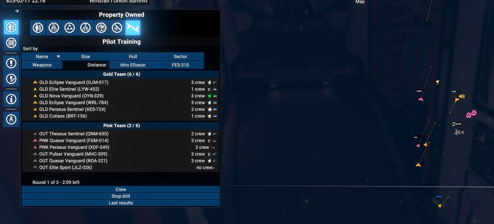
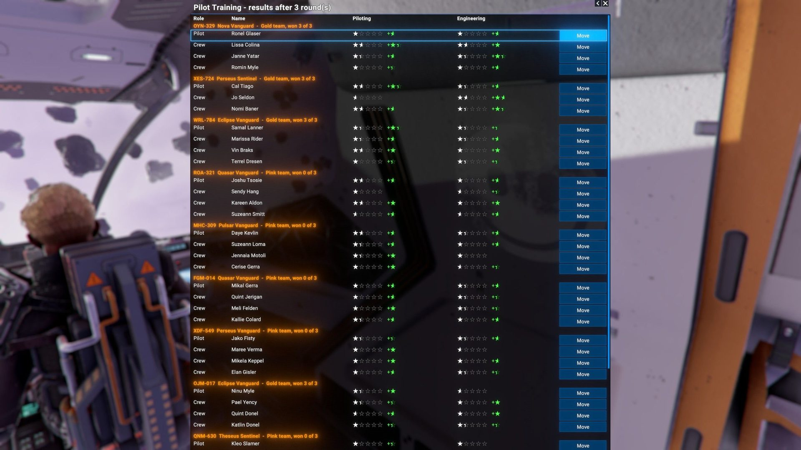
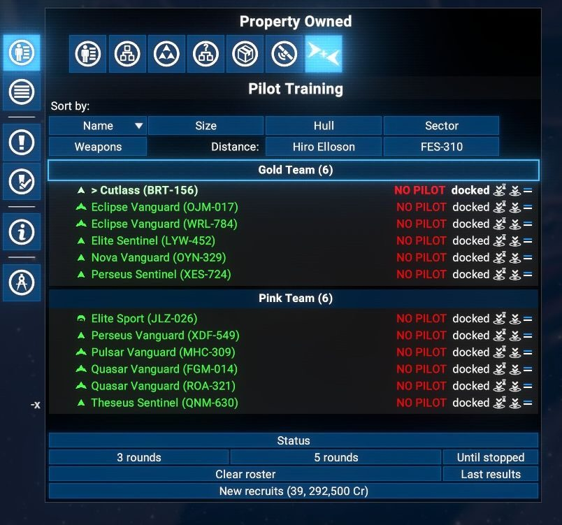
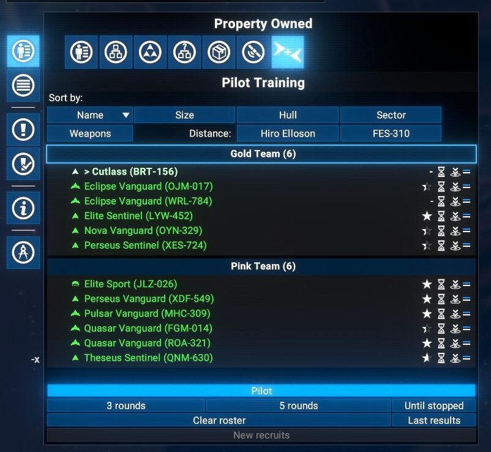
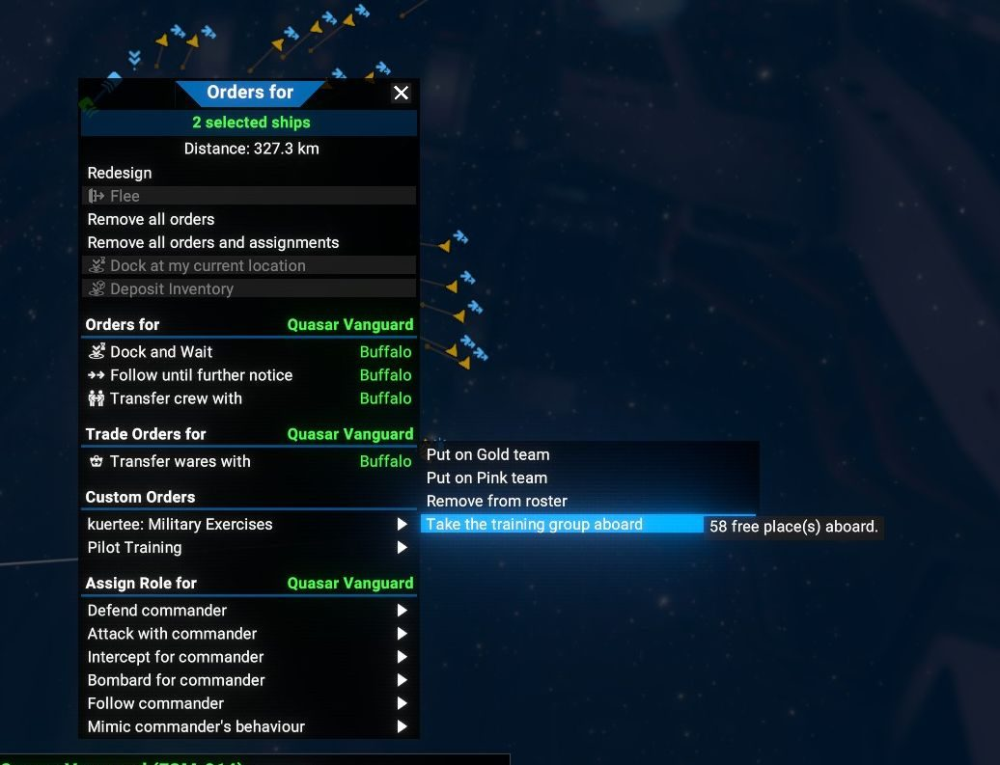
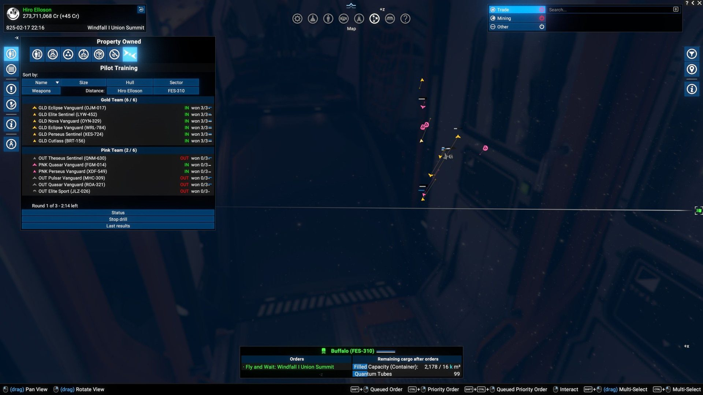
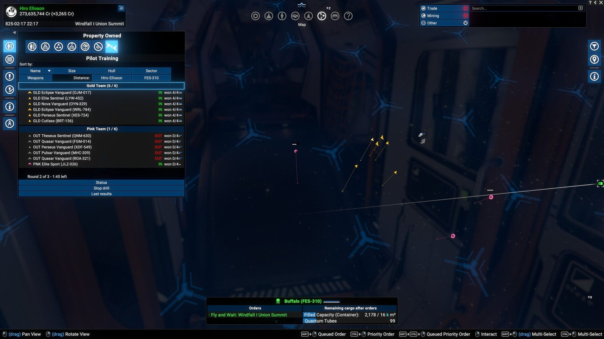
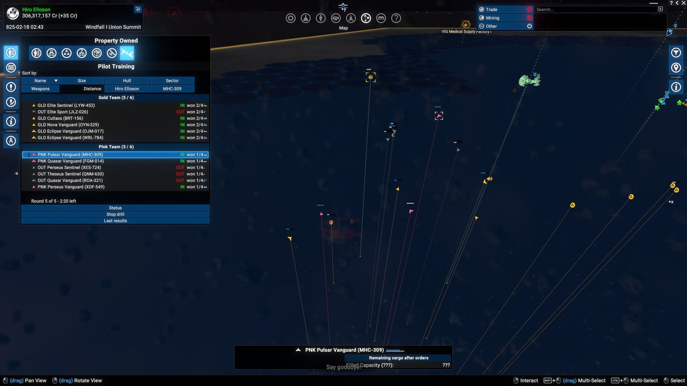
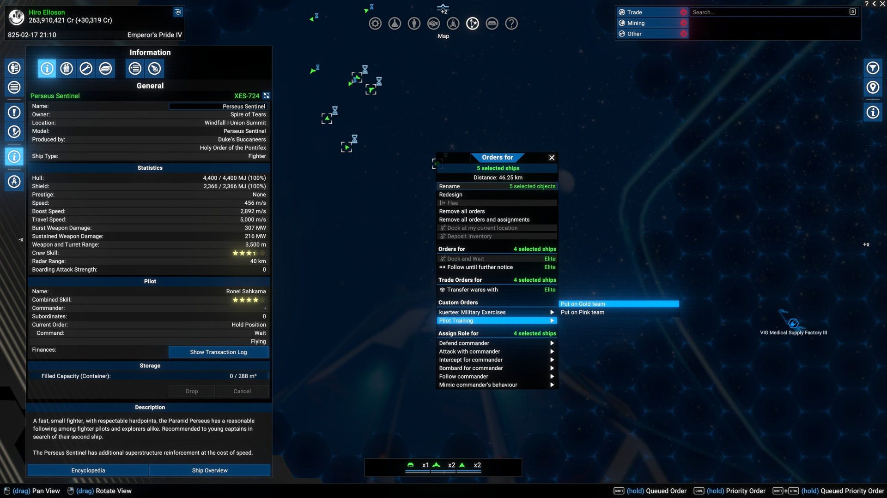
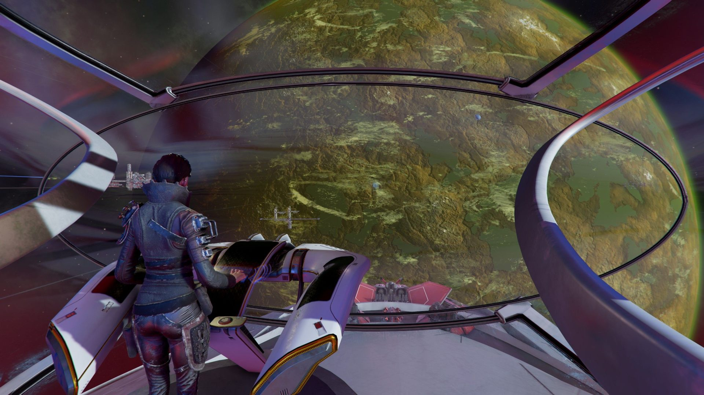

Division IV · X4-Mods
No-loss sparring drills for your S-class ships in X4: Foundations. Two teams, repeated rounds, and every pilot and crew member gains piloting and engineering, win or lose. Nobody can lose a ship.
In X4, pilots only get better in real fights, and real fights cost ships. A rookie pilot in a new fighter is the most likely thing in your fleet to die, which means they never get the experience that would keep them alive.
A sparring ring. Your own S-class ships are split into Gold and Pink, fight each other in rounds, get repaired between rounds, and go home with the load they came with. Pilot and service crew are paid experience after every round.
A training loop you can run from the map: recruit fresh crews, drill them, see the star gains in a results window, then move the trained people onto the ships that need them. Then recruit again.
Mechanics
The ships are handed to two hidden factions that are hostile only to each other. Everyone else — your other ships, other mods' teams — stays neutral to them. When the drill ends, ownership comes back to you.
┌──────────────────────────────────────────────┐ │ roster: your S ships (same sector, piloted) │ └──────────────────────┬───────────────────────┘ v ┌───────────────┐ ┌───────────────┐ │ GOLD faction │ <───> │ PINK faction │ │ hull floor │ fight │ hull floor │ │ 10 % │ │ 10 % │ └───────┬───────┘ └───────┬───────┘ └───────────┬───────────┘ v ┌──────────────────────────────────────┐ │ hit to the out line (35 %) → OUT │ │ one team empty, or time up → END │ │ pay XP: pilot + service crew │ │ repair, refill missiles, 4 s, again │ └──────────────────┬───────────────────┘ v ┌──────────────────────────────────────────────┐ │ release: hull, shields, owner, commander and │ │ missile load restored → results window │ └──────────────────────────────────────────────┘
Safe mode
Every ship in a drill fights with a 10 % hull floor. But a floor makes the game treat a ship as indestructible, and the vanilla AI refuses to attack indestructible targets. The first version's ships just circled each other. The fix is three small patches to vanilla AI scripts that lift that rule only between a Gold and a Pink ship.
| Vanilla script | What the patch changes |
|---|---|
| interrupt.disengage | Don't break off and "learn" the opponent as indestructible. |
| lib.target.selection | Don't skip it when picking a target. |
| order.fight.attack.object | May still turn on whoever is shooting at it. |
| interrupt.attacked | Not patched — it already ignores ships on a priority order, which is what stops fleeing and crew bail checks mid-round. |
In-game UI
Everything is driven from the map's Property Owned menu and the right-click menu. Chat commands exist too, but you never need them.


Loop Recruit → Train → Take group aboard → Recruit again.
Chat commands
The chat window does everything the tab does, plus the settings. Settings can only be changed between drills.
| Command | What it does |
|---|---|
| /ptrain | Help plus current state. |
| /ptrain gold ABC-123 DEF-456 | Put ships on Gold (or pink). target uses the ship you have HUD-targeted. |
| /ptrain run · run 5 · run loop | One round, N rounds, or until stopped. |
| /ptrain stop | End now and give every ship back. An unfinished round pays nothing. |
| /ptrain set floor 35 | Hull percentage that counts as "shot down" (5–90). |
| /ptrain set time 3 | Round time limit in minutes. |
| /ptrain set warp on | Warp both teams to start lines 6 km apart between rounds (default: fight on where they are). |
| /ptrain set missiles refill · ban | Top missiles up before every round (default), or strip them for the drill. Either way every ship goes home with the load it came with. |
| /ptrain set onloss stop · continue | What a destroyed roster ship does to the drill. |
| /ptrain losses · results | Loss log and close calls; reopen the last results window. |
| /ptrain rescue | Emergency: every ship still owned by a training faction comes back to you. |
Experience
The mod adds its own experience category instead of borrowing a vanilla one, so the rate can be tuned without touching anything else in the game.
<!-- own category: ptrain_bout --> <experience id="ptrain_bout"> <!-- pilot (individual) --> piloting falloff 0.83 cap 15 engineering falloff 0.68 cap 15 <!-- service crew (group) --> same rates, group cap 15 (vanilla: 8) </experience> // per round: XP × $XPFactor normal = 0.5 fast = 1.0 // "Fast training" checkbox
Screenshots
Click any picture to enlarge it.








Install
Subscribe on the Steam Workshop or download from Nexus Mods — same mod, pick one. Then restart X4 completely: the new factions and experience category are only read at game start.